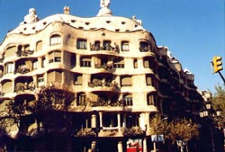

Столица Испании - Мадрид
Мадрид - столица и географический центр Испании. Город расположен к югу от горного хребта Сьерра-де-Гвадарама, посередине кастильского плоскогорья. Основан маврами в IX веке.
Сегодня Мадрид относится к числу наиболее посещаемых крупных городов мира. Наряду с многочисленными памятниками старины туристов ожидает бьющая ключом жизнь большого южного города.
Исторические памятники и скульптурные композиции
сконцентрированы в центральной части города, ограниченной тремя площадями - Главной (Plaza Mayor), "Воротами Солнца" (Plaza Puerta del Sol), считающейся по традиции центром города, и площадью Испании (Plaza de Espana). Здесь находятся церкви Сан-Хинес и Сан-Исидро эль Реаль, пышный ансамбль Королевского дворца, окруженный садами. Живописные фонтаны ХVIII века, парк Ретиро, знаменитые конные статуи Филиппу III и Филиппу IV, памятники Колумбу, Сервантесу, Дон Кихоту и Санчо Пансе.
Музеи
Только в Испании можно в полной мере ознакомиться с арабско-мавританским искусством и проследить историю его развития от самого начала до эпохи высшего расцвета в XIII-XIV веках. В Мадриде насчитывается более 100 музеев и художественных галерей. Особенно выделяется Прадо, пожалуй, главная достопримечательность города. В археологическом музее представлены практически все культуры Испании с древнейших времен. Интересен Музей современного искусства Испании, крупнейшая частная коллекция в Европе - картинная галерея Тиссен Борнемиссена и многие другие.
Музей Эль Прадо.
В этом музее хранится одна из богатейших коллекций западноевропейской живописи. Самая богатая часть галереи - испанская. Здесь выставлены картины Веласкеса, Эль Греко, Мурильо, Рибейры, Гойи.
В Эль Прадо хранятся произведения художников старых европейских школ:
- Рафаэля,
- Тициана,
- Рубенса,
- Веронезе,
- Караваджо,
- Рембрандта,
- Ван Дейка,
- Ватто и других.
В отдельных залах представлена классическая скульптура, произведения ювелирного искусства. Работает ежедневно, кроме понедельника, с 9.00, до 18.30, по воскресеньям и праздничным дням - с 9.00 до 14.00.
Как работают учреждения.
С понедельника по пятницу банковские офисы открыты с 9.00 до 14.00, в субботу - с 9.00 до 12.00.
На центральных улицах пункты обмена валюты работают круглосуточно. В гостиницах обменные пункты открыты и в воскресенье. Почтовые отделения работают с 9.00 до 17.00.
Магазины открыты с 9.00 до 13.00 и с 16.00 до 20.00. В субботу, как правило, магазины работают до 12.00.
Бои быков (коррида).
До сих пор еще - это одно из любимейших зрелищ испанцев. А тореадор, появляющийся в последнем акте представления, - важная фигура в испанской жизни. В него влюбляются женщины, как в знаменитых актеров, его чествуют, гордятся знакомством с ним. Сезон начинается в марте заканчивается в октябре. Самые большие корриды сезона проходят в середине июня - в праздник "Святой город". Кроме того, большая коррида проходит 2 мая и и октябре - в религиозный праздник Сан Исидро Лaбpaдop.
Особенности корриды
Выбор боевых быков
Для боёв выращивается особая порода быков, происхождение которых устанавливается при помощи крохотного вымпела, вставленного в затылок. Идеальным для участия в корриде считается возраст от 4 до 6 лет. Вес быка обычно составляет не менее 450 кг. Шансы на выживание быка после боя — минимальны. В случае благоприятного исхода, животное используется для осеменения, но выход на арену для него закрыт навсегда.
Арена
На этапах становления коррида организовывалась на прямоугольных площадях города. Когда были приняты основные правила проведения боёв, при которых бык не должен забиваться в угол, началось строительство круглых площадок. Первой была площадь Ла Маэстранска в Севилье, возведённая в 1733 году. Plaza Monumental в Мехико имеет 55 000 посадочных мест и считается на сегодняшний день самой большой ареной для корриды в мире.